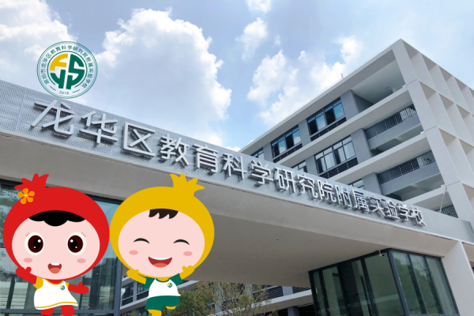
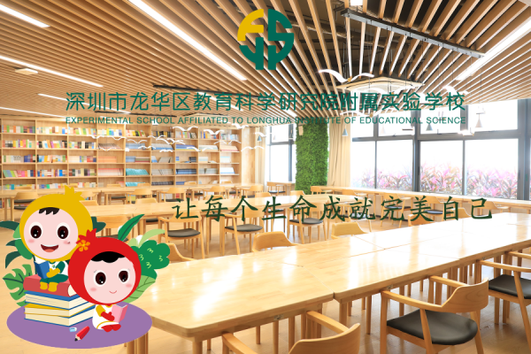
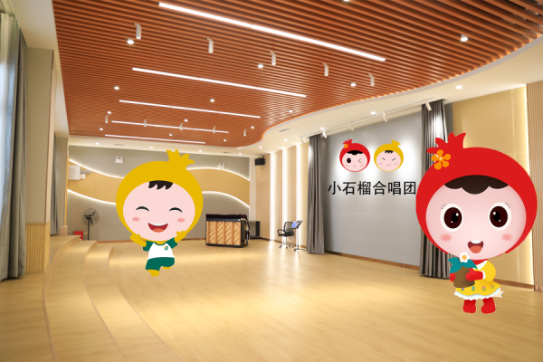
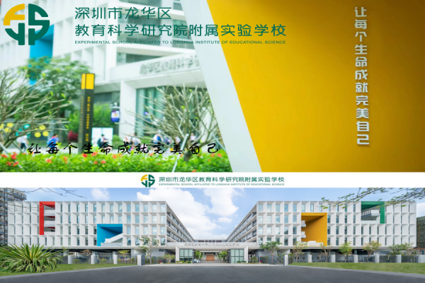
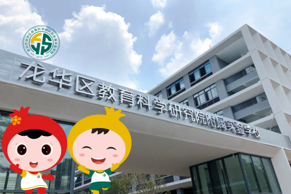
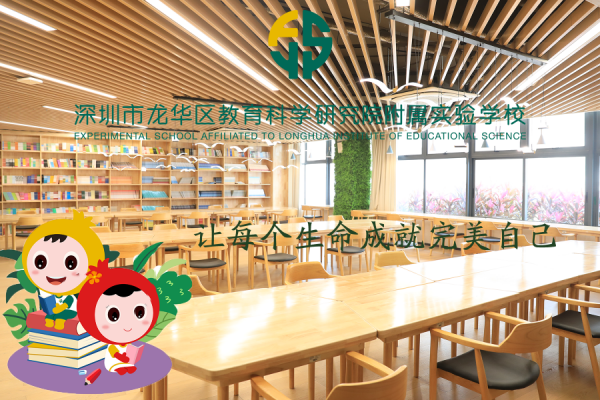
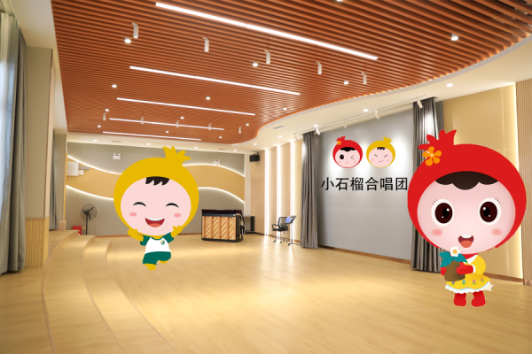
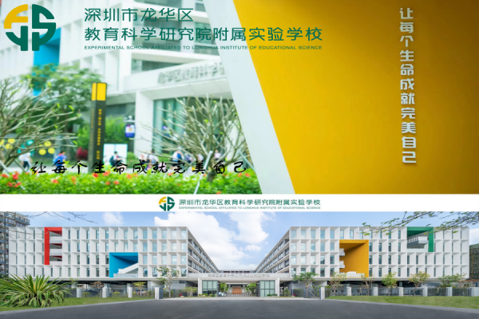

深圳市龙华区教育科学研究院附属实验学校，是区教育局高标准打造的一所九年一贯制公办学校，位于龙华大道与民兴路交会处。学校总用地面积为20400㎡，建筑面积为48080㎡。
学校核定办学规模为45个班（其中小学30班，初中15班），共计约2250个学位（其中，小学1500人，中学750人）。我校现有42个班，学生1937人（其中，小学部31个班，1507人；初中部11个班，430人）。
现有教职工198人，专任教师166人。其中，中学教师57人，小学教师109人；硕士学历72人，本科学历94人。有龙华区引进高层次人才1名，正高级教师1名，高级教师15名，省级名师2名，市级名师1名，区“三名工程”优秀教师12名，区“名师领雁工程”2名，区“未来教育家工程”成员9名。
理 念：让每个生命成就完美自己
校 训：进德修业 美美与共 校 风：笃行致远 久久为功 教 风：教学相长 循循善诱 学 风：乐学善思 孜孜以求学校始终坚持立德树人，五育并举，秉持“尊重差异，多元选择，自我发展，各美其美”的课程理念，采用“学科基础课程+特色拓展课程+活动体验课程”的课程结构模式，以国家课程为主、地方校本课程为辅，构建“共美课程”体系，致力于将学生培养成具有完整人格、责任担当、家国情怀、国际视野，学习力强、思辨力强、创造力强、生活力强的“四有四强”的现代公民，助力每个学生成就完美自己。

 






